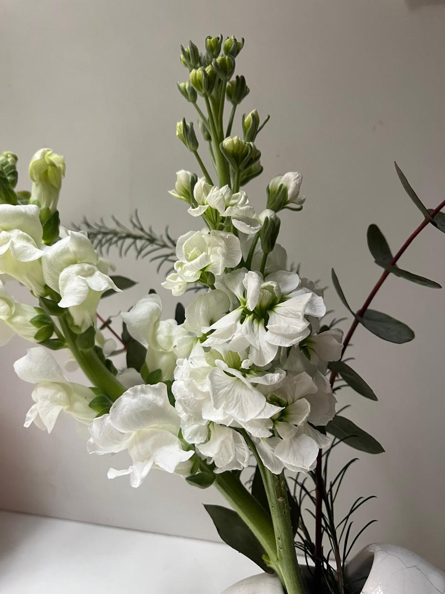

Blancas
Conejitos

- Conejitos (Antirrhinum) De líneas puras y elegantes, el conejito florece en espiga y sorprende con su forma delicada que parece susurrar al abrirse. En su tono blanco, aporta luz, altura y un aire silvestre y sofisticado a cualquier arreglo.
- En la misma imagen: Alelí (Matthiola) Intenso y perfumado. El alelí despliega racimos de pétalos suaves con un aroma envolvente que permanece. Blanco, etéreo y romántico, es la flor que no solo se ve, se siente.
Me encantaría tener un jardín como este.
Jardin